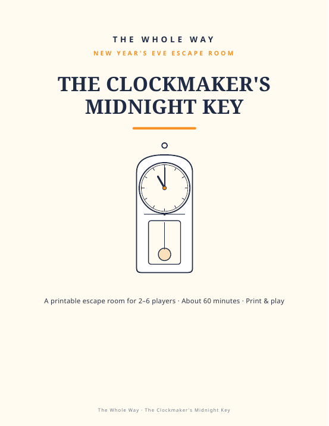
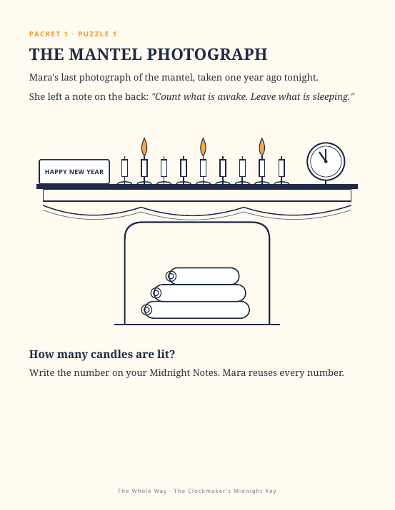
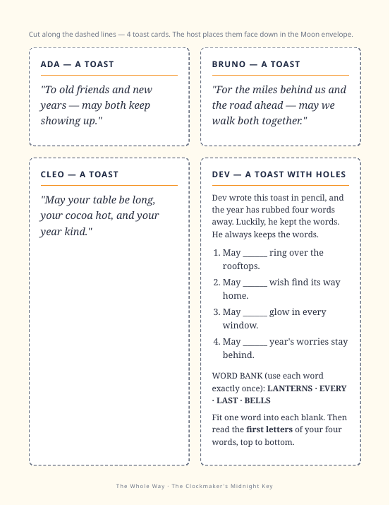
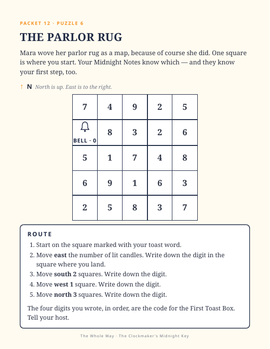

The Whole Way New Year's Eve Escape Room
The Clockmaker's Midnight Key. The old clock above the fireplace has stopped, its key is locked inside the First Toast Box, and Mara the clockmaker left six puzzles behind. Your guests have until midnight to solve the chain — every answer opens the next envelope — and wind the clock before the new year rings in.
$9.90 one-time payment
Buy the NYE Escape RoomSecure checkout by Creem — taxes are handled by Creem at checkout. Instant download after purchase.

One story, six locks
This is a real escape room played on paper, around your own table. Mara Venn was the clockmaker of Venn House, and she did not believe in giving things away for free — she believed in earning them together. Before she died, she sealed the Midnight Key inside the First Toast Box and left six puzzle packets for the people who would spend New Year's Eve in her house.
The chain is the game: the number you count in the first puzzle is a step in the last one, the word you rescue from a ruined toast names the envelope you open next, and the final puzzle — a parlor rug that is secretly a map — turns everything you have written on your Midnight Notes into the four-digit code for the box. Solve it before midnight and the clock rings in the new year on time.
Why this kit checks out
Everything solves from the printed pages
No app, no website, no phone mid-game, no hunting around the house for hidden objects. Every clue a puzzle needs is printed on the pages in front of the players — if the answer exists, it is on the paper. The whole chain was solved start to finish from the printed pages alone before this kit shipped.
Nobody stays stuck
Every puzzle carries three hint cards — a nudge, a push, and nearly the answer — 18 in all. The host hands them out one level at a time, so a hard puzzle slows the table down instead of stopping the party. The seating puzzle is the thinker of the six; the bell test card is the breather after it.
The host gets the whole answer key
A host guide walks you through setup and running the night, a quick-check answer sheet lets you confirm each answer in seconds without spoiling yourself, and full written solutions for all six puzzles close the kit. Wrong code? The box just clicks — the host sends the table back to its notes, no penalties, no dead air.
What you get
- Two printable PDFs — the complete 19-page kit in US Letter and A4 editions. Print once, in color or black-and-white; no puzzle depends on color.
- 6 linked puzzles — a candle count, a coded telegram, a seating logic puzzle, a toast with holes, a bell test card, and a parlor rug map. Each answer feeds the next puzzle, and all of them meet in the final code.
- 18 hint cards — three levels per puzzle, printed on cut-apart card pages and handed out by the host one level at a time.
- Host guide — the story background, the envelope-by-envelope setup, how to run hints and wrong answers, and the ending to read aloud when the box opens.
- Quick-check answer sheet & full solutions — every answer at a glance for the host, plus the complete worked solution to each puzzle.
- Midnight Notes page — the players' running record sheet, where each answer is written down as it is found — they will need every one of them at the rug.
- Free updates — updates to this edition are free for buyers: if a puzzle ever slips past our checks, the fix lands in your inbox, not just in the shop.



All six puzzles, in the order the chain unlocks them
Who this is for
- Anyone hosting New Year's Eve at home — 2–6 players, about 60 minutes, timed to end at midnight if you start it at eleven.
- Hosts who want the entertainment handled: story, puzzles, hints, answers and the ending are all in the file.
- Groups who like paper puzzles — observation, decoding, logic, wordplay and one map to walk with a finger.
Who this is not for
- Anyone who wants an app or screen-based escape room — this is paper, on purpose.
- Anyone who needs a game in a language other than English (this edition is English only).
- Anyone planning a large-group event — the chain is built for one table of 2–6 players.
FAQ
What exactly do I receive?
A ZIP containing the complete kit twice — a 19-page US Letter PDF and a 19-page A4 PDF (the same escape room in two page sizes) — plus a short print-and-setup README. Nothing is shipped; it's a download, ready right after checkout.
What do I need to play?
A printer, scissors, a pen or pencil per player, and 7 ordinary envelopes. The host seals each puzzle packet into its envelope before the party — setup takes about 12 minutes. Any small box, drawer or gift bag can stand in for the First Toast Box; no real lock is needed, because the host checks the code against the answer sheet.
Do we need phones or internet during the game?
No. Everything each puzzle needs is printed on its pages — the kit was solved end to end from the printed pages alone before it shipped. Phones stay in pockets until the midnight photos.
How many players, and how long does it take?
2–6 players, about 60 minutes. Start at eleven and the final code lands right around midnight — the ending page is written to be read aloud as the clock rings in.
What if we get stuck?
Ask the host for a hint. Every puzzle has three hint cards — a nudge, a push, and nearly the answer — 18 cards in total, handed out one level at a time. Hints are free and unlimited; nobody has to sit a puzzle out.
Are the answers really all there?
Yes. The host gets a quick-check answer sheet (every answer on one page) and full written solutions for all six puzzles, including the seating logic worked through and the rug route walked step by step.
Which size should I print?
Both are included: US Letter and A4. Same kit, same page count — pick your printer's paper. Black-and-white printing works fine; no clue depends on color.
Can the host play too?
The host runs the envelopes, the hints and the code check, and the quick-check sheet is laid out so checking an answer doesn't spoil the rest. A host who wants to solve along can hand the answer sheet to a second person — or simply play as a player and peek only when the table asks for a hint.
Can I use it again next year?
Yes. Print a fresh copy for a new group of guests — the puzzles are yours to replay with anyone who hasn't seen the answers. Personal use covers your own parties.
What if something's wrong with the file?
Email djh973832@gmail.com — we'll fix it, and corrected editions go to all buyers free.
Was AI used to make this?
Yes — openly. The kit was produced with AI assistance and human editorial review, and every preview on this page is a real page from the actual PDF, not a mock-up. The puzzle chain was test-solved from the printed pages alone before shipping.